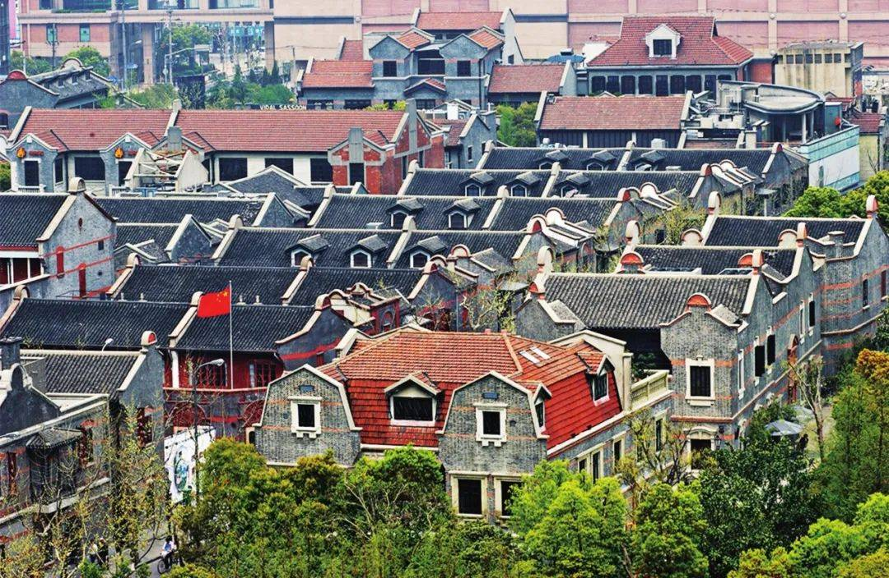

正文
題目二 : 民國時期家居、服飾和飲食習慣與現在有多大分別?
從1912年至1949年民國擺脫了帝制,迎來了中西合璧的生活模式,其中有多少和我們現在相似又或不同?試從以上三個角度尋找資料, 各自找出與現在最不相同的兩個例子共六個,介紹和分析背後的原因,最後你會選擇現在還是以往的生活方式哩?
家居方面
例子一 → 家具
民國時期是古典家具向現代家具過渡的重要時期，由於城市生活方式的改變，家具設計的思路也有重大的改變。家具設計的重點不再是重客廳而輕臥室，而是重實用，按照使用方式，推出了成套的家具。如客廳家具、臥室家具、書房家具、餐廳家具等。雖然和現代家具設計的思路有一點相似，但是還是有很大的不同。

↑民國時期的家具 - 古典家具
現代的家具偏向西式風格，且外觀十分精簡，而民國時期的家具偏向中西式合一的風格，除了有中式古典家具的精緻之外，也有西式家具的實用性設計，但整體風格還是和中式古典家具相似，比起現代家具，民國時期的家具更像是摻了一點西式家具元素的中式古典家具。

↑現代家具 - 偏向精簡
例子二 → 房屋
介紹 :
民國時期出現了石庫門建築，石庫門民居建築始建於民國初期，成排修建，以「裡」「枋」冠名。每幢建築為二層小樓，房間佈局採用西洋民居單開間或雙開間佈局，雙開間佈局只保留一側的前後廂房，單開間佈局完全取消了廂房。後面的附屋改坡頂為平頂，在上面搭建一間小臥室名「亭子間」。亭子間屋頂用鋼筋混凝土平板，周圍砌以欄桿牆，可做曬台用。
↑民國時期房屋 - 石庫門建築
而民國時期的房屋和現代的房屋最大的分別就是民國時期的房屋通常都只有二層至三層，最多也才到五層，而現代的房屋則最小由十層起跳，最高更能高達六十多層。除此之外，因為現代人口急速上升，現代的房屋的面積和房間的數量比起民國時期的房屋都要少。
↑現代的房屋 - 公寓
服飾方面
例子一 → 衣服
民國初年受清朝和西方文化的雙重影響，出現了以廢除傳統服飾為中心內容的服飾改革。男子服出現了從長袍馬褂向中山裝和西裝逐步過渡的趨向。尤其便現在東部沿海港口城市，由於沿海口岸城市較早開放，得風氣之先，以京師宮眷顯貴為代表而被全國效尤的傳統京派服飾，漸漸失去了領導服飾潮流的優勢，轉而仿效蘇杭、上海。這一現像也表現出了西方文化滲透的方向。全國總體表現在，從東向西男子服飾由大量的中山裝和西裝向大量馬褂長袍的變化。
而女子服主要在隨著清末革命運動和女子解放運動的興起，一些新型知識分子把服飾變革與女子解放聯繫起來，認為傳統服飾是束縛婦女的枷鎖，主張予以改革。民國初年，女子衣著特點：首先是取消了服飾上的等級差別，這一舉措無疑不成為婦女解放運動推向成功的訊號。其次滿族婦女的服裝遭到摒棄。除此之外，在西方文化的影響下，中國婦女服裝改變了傳統的胸、肩、背完全成平直的造型，變得更加稱身合體，並能體現女性的秀體之美。於是旗袍的走向了大街小巷，一時成為時尚的代名詞。
↑民國時期的衣服 - 長袍馬褂(男)，旗袍(女)
而民國時期的衣服和現代衣服的分別是現代的衣服有很多不同的種類，例如毛衣、襯衣、半袖、外套、羽絨服、西服、裘皮、馬夾、T卹、背心等，而且人們也開始穿著更簡單，更簡潔的衣服。而且不像民國時期厚重和不方便的衣服，現代的衣服大都都設計成方便人們的活動和工作的衣服。

↑現代的衣服 - 更簡潔的衣服
例子二 → 飾物
民國時期，珠寶首飾已經接受了西方的先進理念，但仍有一些中國的特式，民國時期的女性一般會佩戴項鍊、耳環、耳墜、戒指、手錮、手錶、胸針等各種飾物，外出時，一般還拎著小巧玲瓏的提兜和製作精美的絹傘。

↑民國時期的飾物 - 翡翠首飾
但是即使如此，現代的珠寶首飾的種類和樣式還是比民國時期的珠寶首飾多很多，而且由於製作工藝的進步，現代的珠寶首飾比起民國時期的珠寶首飾會更精緻，更漂亮。

↑現代的飾物 - 精緻的珠寶首飾
飲食習慣方面
例子一 → 飲食
民國也是個美食絢爛的時代，八大菜系：川菜、湘菜、粵菜、閩菜、蘇菜、浙菜、徽菜和魯菜最終定型、區域之間的美食交流更加頻繁、菜品普遍大眾化。而西餐從鴉片戰爭後進入中國，在民國也逐漸成為時尚。

↑蔣介石(右)與夫人宋美齡(左)在吃中餐
現代和民國時期在飲食上最大的分別是現代的食物很多元化，除了中餐，西餐，還有很多不同地方的菜，例如越南菜，法國菜，日本菜等等。
↑現代的食物 - 多元化的食物
例子二 → 餐桌禮儀
民國時的餐桌禮儀 :
在客人落座後，便開始上菜，先上下酒菜，然後上下飯菜，燙上在最後，表示菜已上完。
酒具如果是杯子，則應該每人一個，先由主人斟滿酒，說聲「請」， 大家才能喝。如果酒具是一隻碗，就應該讓長輩先喝，從左至右依次傳遞，待都喝了一遍之後，主人拿起筷子，說聲「請菜」大家才能動手。拈菜時不能在菜裡亂翻，都拈靠自己一邊的菜。
如果客人不會喝酒，應該站起來，用手按住酒杯，歉意地說不會，主人一般要勸酒，但不能強行讓客人喝。為了表示對主人的敬意，客人一般應該多少喝點。酒過三巡，客人都表示不能再喝酒時，便可以開始吃飯。
吃飽下桌子時，需要對大家說慢慢吃。而且主人一定要吃得很慢，待所有的客人下桌後才能放下筷子散席。

↑民國時期的餐桌禮儀 - 複雜的餐桌禮儀
現代和民國時期在餐桌禮儀上最大的分別就是現代有開放和自由的餐桌禮儀，而且大多數的人已經開始沒有餐桌禮儀的概念，雖然仍會有人遵守餐桌禮儀，但是大多數人如果和同伴或家人一起吃飯，大都都不會遵守餐桌禮儀，這是因為現代的思想開放，大多數人都開始覺得餐桌禮儀不太重要了。
↑現代的餐桌禮儀 - 開放和自由的餐桌禮儀